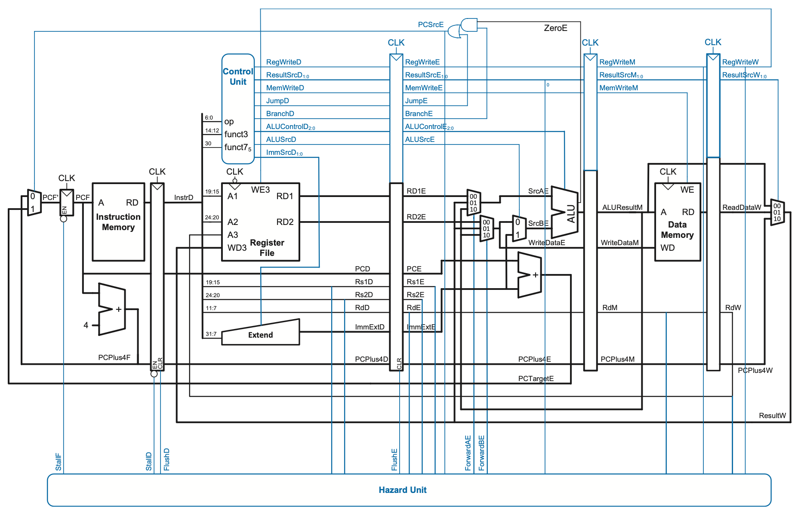

CS 21 26.1 Laboratory Exercise 6
Pipelined Processor in Logisim
Overview
In the lecture, we introduced the RISC-V Pipelined Processor. In this lab activity, you will be using Logisim to modify an existing pipelined RISC-V processor implementation to support other kinds of instructions.
General Instructions
In the Laboratory 6 Walkthrough you were given a guided activity for navigating the Pipelined processor implementation in Logisim. In this laboratory activity, you are to work on
- 1 Checkpoint Item (worth 70 points)
Relevant Links
- Ripes Fork: https://ripes.upd-dcs.work
- Lab 6 Logisim Template: https://drive.google.com/file/d/1YIG0GWN8k4u7n-qk0t6r8i7NrUMPpal9/view?usp=sharing
Preliminary Task
Before you proceed with the Checkpoint task, download a copy of the Lab 6 Logisim Template and do the following preliminary tasks:
Basic execution
Before moving forward, do the following:
-
Select Simulate > Reset Simulation (or hit
Ctrl/Cmd-r) to restart the simulation state. -
Observe that
PC4F(i.e., thePC + 4value in the Fetch stage) is currently at0x4and thatNextPCis also at0x4. Ensure you are able to follow how the implementation is able to compute this. -
Notice as well that
PC4D,PC4E,PC4M, andPC4Ware currently at0x0. -
Select Simulate > Manual Tick Half Cycle twice or Simulate > Manual Tick Full Cycle once (preferably using their keyboard shortcuts) to cause the next triggering edge to occur. Notice that the
0x4value ofPC4Fhas now moved toPC4E, and thatPC4Fis now0x8. -
Tick the clock once more to see the said values move one stage. Before moving forward, ensure that
PC4Fis0xc,PC4Dis0x8, andPC4Eis0x4.
Manual hazard resolution
The template does not have any forwarding or hazard resolution implemented. To perform manual hazard resolution, the top-left corner of the template provides input pins for StallF, StallD, FlushD, and FlushE that can be manually set with the Poke tool. Before proceeding, try to do the following and observe the behavior of the processor:
-
Use the Poke tool to set
StallFto1, then tick the clock. Verify thatPC4Fis still0xc, butPC4Dis also0xc. Ensure you understand why that is the case before proceeding. -
Set
StallFto0, then tick the clock once;PC4Fshould now be0x10whilePC4Dshould be0xc. Then, set bothStallFandFlushDto1. Verify thatPC4FandPC4Dare unaffected, then tick the clock. What happened toPC4FandPC4D? -
Set both
StallFandFlushDto0, then tick the clock thrice;PC4Fshould now be0x1cwhilePC4Dshould be0x18. Verify as well thatPC4Eis0x14andPC4Mis0x10. -
Finally, think about what setting
StallF,StallD, andFlushEto1would do, then verify your hypothesis by setting them to1, ticking the clock, and checking the values ofPC4F,PC4D,PC4E,PC4M, andPC4W.
Checkpoint Tasks
Checkpoint Item 1: Designing the Forwarding + Hazard Unit (70/100 points)
Modify the given Logisim circuit such that:
- A subcircuit named
hazardunitthat detects and resolves hazards is present hazardunitis placed in themaincircuit to serve as its hazard unit- The datapath accommodates forwarding as discussed in class
For your convenience, the complete hazard unit logic is as follows:
| Output | Logic |
|---|---|
ForwardAE = 10 (priority) |
(Rs1E == RdM) & RegWriteM & (Rs1E != 0) |
ForwardAE = 01 |
(Rs1E == RdW) & RegWriteW & (Rs1E != 0) |
ForwardAE = 00 |
Otherwise |
ForwardBE = 10 (priority) |
(Rs2E == RdM) & RegWriteM & (Rs2E != 0) |
ForwardBE = 01 |
(Rs2E == RdW) & RegWriteW & (Rs2E != 0) |
ForwardBE = 00 |
Otherwise |
lwStall (not used outside the hazard unit) |
ResultSrcE_0 & ((Rs1D == RdE ) | (Rs2D == RdE)) |
StallF |
lwStall |
StallD |
lwStall |
FlushD |
PCSrcE |
FlushE |
lwStall | PCSrcE |
Flushing behavior implication
Note that the way FlushD and FlushE are computed implies that the processor employs static branch prediction with a branch-not-taken default.
The complete datapath forwarding logic is as follows:
| Control signal | Effect |
|---|---|
ForwardAE == 00 |
RD1E is first ALU operand |
ForwardAE == 01 |
ResultW is first ALU operand |
ForwardAE == 10 |
ALUResultM is first ALU operand |
ForwardBE == 00 |
RD2E is both WriteDataE value and port 0 input of ALUSrcE multiplexer |
ForwardBE == 01 |
ResultW is both WriteDataE value port 0 input of ALUSrcE multiplexer |
ForwardBE == 10 |
ALUResultM is both WriteDataE value port 0 input of ALUSrcE multiplexer |
The complete pipelined processor diagram may be found below for your convenience:

Ensure that:
- All other instructions that were supported before by the template still work as intended
- The input pins for
StallF,StallD,FlushD, andFlushEin the top-right corner of themaincircuit are deleted
You are encouraged to use tunnels and comparators.
Save the resulting circuit as lab06checkpoint.circ.
Hint: Priority encoders
You may find priority encoders more useful in deriving an implementation of a conditional statement over a implementing with a truth table.
Test Program
Tip: Quick conversion shell script
Supposing the output of the Ripes assembly is in assembly.txt, the following command automatically transforms the said output into its Logisim-ready form in logisim.txt:
You may test your work using the following RISC-V program and compare the resulting register values in the State tab after 37 clock cycles with those of Ripes:
main:
addi s0, zero, 100 # s0 = 100
addi t0, zero, 5 # t0 = 5
addi t1, zero, 10 # t1 = 10
add t2, t0, t1 # t2 = 15
add t3, t2, t0 # t3 = 20 (forwarding)
addi t4, zero, 7 # t4 = 7
sw t4, 0(s0) # MEM[100] = 7
lw t5, 0(s0) # t5 = 7
addi t6, zero, 3
add t1, t5, t6 # t1 = 10 (forwarding)
lw t2, 0(s0) # t2 = 7
add t3, t2, t0 # t3 = 12 (load-use stall)
addi t0, zero, 1 # t0 = 1
addi t1, zero, 2 # t1 = 2
beq t0, t1, skip1 # Not taken (forwarding; should not flush)
addi t2, zero, 99 # t2 = 99
skip1:
addi t0, zero, 3 # t0 = 3
addi t1, zero, 3 # t1 = 3
beq t0, t1, taken1 # Taken (forwarding; should flush)
addi t2, zero, 111 # Should be flushed
taken1:
jal t0, func # t0 = PC + 4 (initial fetch should be flushed)
addi t3, zero, 222 # Should be flushed
after:
beq zero, zero, end # Taken (should not trigger forwarding)
func:
addi t4, zero, 42 # t4 = 42
jal zero, after # return (no ra needed)
end:
beq zero, zero, end # Infinite loop